JEE Main 2024 (Session 2), 4 Apr Shift 1: worked solutions for review
Questions and options are NTA’s own images; the green option is NTA’s final key. Every solution below was written by Claude
and checked against NTA’s final key. It is not NTA’s solution. Please mark anything unclear or wrong.
Q1 · Mathematics · MCQ · ID 87827055428
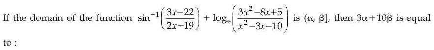
Hint 1: Write the two conditions: −1 ≤ (3x − 22)/(2x − 19) ≤ 1, and the log's argument > 0.
Hint 2: (3x − 22)/(2x − 19) ≤ 1 gives (x − 3)/(2x − 19) ≤ 0; ≥ −1 gives (5x − 41)/(2x − 19) ≥ 0. Factor 3x² − 8x + 5 = (3x − 5)(x − 1) and x² − 3x − 10 = (x − 5)(x + 2).
What this tests: Domain of a function (rational inequalities).
1. The sin−1 part gives x ∈ [3, 41/5].
2. The log part (sign chart) gives x < −2, 1 < x < 5/3, or x > 5.
3. Together: (5, 41/5], so α = 5, β = 41/5.
4. 3α + 10β = 15 + 82 = 97.
Answer: (2)
If this felt hard: Revise 'Relations and Functions' and 'Inverse Trigonometric Functions'.
Claude’s answer: 2 · NTA final key: 2 · agrees · Answer recomputed with SymPy (tools/verify_pyq_solutions.py)
Q2 · Mathematics · MCQ · ID 87827055429
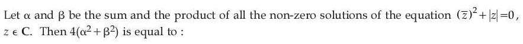
(1) 
(2) 
(3) 
(4) 
Hint 1: z̄² = −|z| is a negative real number. What does that say about z̄?
Hint 2: z̄² negative real means z̄ is purely imaginary: z = iy. Then −y² + |y| = 0.
What this tests: Solving equations in complex numbers.
1. |y| = 1 (non-zero), so z = i or −i.
2. α = i + (−i) = 0, β = i × (−i) = 1.
3. 4(α² + β²) = 4.
Answer: (2)
If this felt hard: Revise 'Complex Numbers'.
Claude’s answer: 2 · NTA final key: 2 · agrees · Answer recomputed with SymPy (tools/verify_pyq_solutions.py)
Q3 · Mathematics · MCQ · ID 87827055430
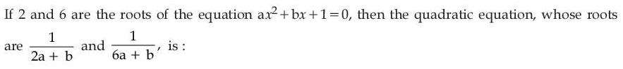
Hint 1: Find a and b from the sum and product of the roots.
Hint 2: Sum 8 = −b/a, product 12 = 1/a. So a = 1/12, b = −2/3.
What this tests: Forming a quadratic from its roots.
1. 2a + b = −1/2, so the first root is −2. 6a + b = −1/6, so the second root is −6.
2. Equation: (x + 2)(x + 6) = x² + 8x + 12 = 0.
Answer: (1)
If this felt hard: Revise 'Quadratic Equations'.
Claude’s answer: 1 · NTA final key: 1 · agrees · Answer recomputed with SymPy (tools/verify_pyq_solutions.py)
Q4 · Mathematics · MCQ · ID 87827055431
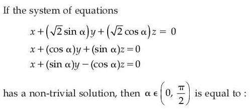
Hint 1: A non-trivial solution needs the coefficient determinant to be zero.
Hint 2: Expanding and using sin² + cos² = 1, the determinant simplifies to −1 − √2(cos 2α − sin 2α) = −1 − 2cos(2α + π/4).
What this tests: Homogeneous systems with trigonometric coefficients.
1. cos(2α + π/4) = −1/2, so 2α + π/4 = 2π/3 (for α in (0, π/2)).
2. 2α = 2π/3 − π/4 = 5π/12, so α = 5π/24.
Answer: (3)
If this felt hard: Revise 'Determinants' and 'Trigonometric Functions'.
Claude’s answer: 3 · NTA final key: 3 · agrees · Answer recomputed with SymPy (tools/verify_pyq_solutions.py)
Q5 · Mathematics · MCQ · ID 87827055432
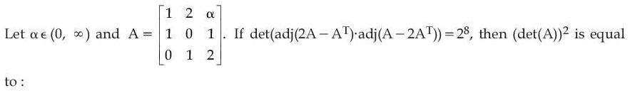
(2) 
Hint 1: For 3 × 3 matrices, det(adj M) = (det M)². Also det(Mᵀ) = det M.
Hint 2: det(2A − Aᵀ) and det(A − 2Aᵀ): note A − 2Aᵀ = −(2A − Aᵀ)ᵀ, so their determinants have equal size.
What this tests: Determinant of adjoint and transpose.
1. det A = α − 5, and the product of the two adjoint determinants is (det(2A − Aᵀ))²(det(A − 2Aᵀ))² = 2⁸. This gives α = 1 for α > 0 (then both determinants are ±4).
2. det A = −4, so (det A)² = 16.
Answer: (2)
If this felt hard: Revise 'Determinants'.
Claude’s answer: 2 · NTA final key: 2 · agrees · Answer recomputed with SymPy (tools/verify_pyq_solutions.py)
Q6 · Mathematics · MCQ · ID 87827055433
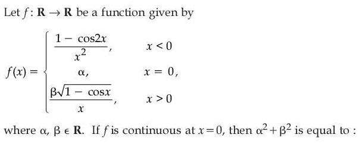
(2) 
(3) 
(4) 
Hint 1: Find the left limit, the right limit and f(0), and set them equal.
Hint 2: (1 − cos 2x)/x² → 2. √(1 − cos x) = √2|sin(x/2)|, so the right limit is β/√2.
What this tests: Continuity with standard limits.
1. α = 2 and β/√2 = 2, so β = 2√2.
2. α² + β² = 4 + 8 = 12.
Answer: (3)
If this felt hard: Revise 'Continuity and Differentiability'.
Claude’s answer: 3 · NTA final key: 3 · agrees · Answer recomputed with SymPy (tools/verify_pyq_solutions.py)
Q7 · Mathematics · MCQ · ID 87827055434
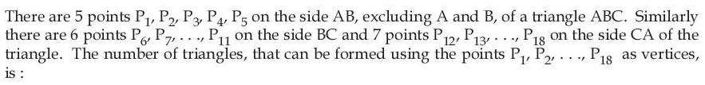
Hint 1: Choose any 3 of the 18 points, then remove the choices that lie on one side (collinear).
Hint 2: C(18, 3) − C(5, 3) − C(6, 3) − C(7, 3).
What this tests: Counting triangles (excluding collinear points).
1. 816 − 10 − 20 − 35 = 751.
Answer: (4)
If this felt hard: Revise 'Permutations and Combinations'.
Claude’s answer: 4 · NTA final key: 4 · agrees · Answer recomputed with SymPy (tools/verify_pyq_solutions.py)
Q8 · Mathematics · MCQ · ID 87827055435
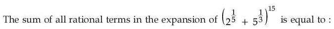
Hint 1: General term C(15, r) 2(15 − r)/5 5r/3. When are both powers integers?
Hint 2: Need 15 − r divisible by 5 and r divisible by 3: r = 0 or 15.
What this tests: Rational terms in a binomial expansion.
1. r = 0: 2³ = 8. r = 15: 5⁵ = 3125.
2. Sum = 3133.
Answer: (2)
If this felt hard: Revise 'Binomial Theorem'.
Claude’s answer: 2 · NTA final key: 2 · agrees · Answer recomputed with SymPy (tools/verify_pyq_solutions.py)
Q9 · Mathematics · MCQ · ID 87827055436
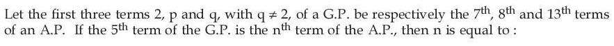
Hint 1: Write the AP terms with a and d: a + 6d = 2, a + 7d = p, a + 12d = q. The GP has ratio r: p = 2r, q = 2r².
Hint 2: a + 7d = 2r and a + 12d = 2r². Subtract the first equation to get d in terms of r twice.
What this tests: AP and GP together.
1. d = 2r − 2 and 6d = 2r² − 2, so 6(2r − 2) = 2r² − 2: r² − 6r + 5 = 0, r = 5 (r = 1 gives q = 2).
2. d = 8, a = −46. 5th GP term = 2 × 5⁴ = 1250.
3. −46 + (n − 1)8 = 1250 gives n = 163.
Answer: (2)
If this felt hard: Revise 'Sequences and Series'.
Claude’s answer: 2 · NTA final key: 2 · agrees · Answer recomputed with SymPy (tools/verify_pyq_solutions.py)
Q10 · Mathematics · MCQ · ID 87827055437
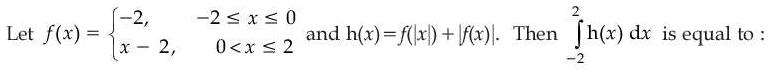
(1) 
(3) 
(4) 
Hint 1: Work out h on [−2, 0] and on [0, 2] separately.
Hint 2: For x in [−2, 0]: f(|x|) = |x| − 2 = −x − 2 and |f(x)| = 2. For x in (0, 2]: f(x) = x − 2, so h = (x − 2) + (2 − x) = 0.
What this tests: Integrals of piecewise functions with modulus.
1. On [−2, 0], h(x) = −x, so ∫ = 2.
2. On [0, 2], h = 0.
3. Total = 2.
Answer: (2)
If this felt hard: Revise 'Integrals'.
Claude’s answer: 2 · NTA final key: 2 · agrees · Answer recomputed with SymPy (tools/verify_pyq_solutions.py)
Q11 · Mathematics · MCQ · ID 87827055438
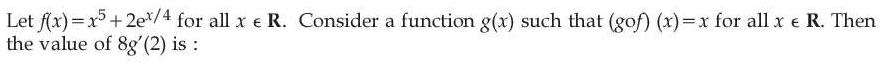
(1) 
(2) 
(3) 
Hint 1: g is the inverse of f. Which x gives f(x) = 2?
Hint 2: f(0) = 2, so g(2) = 0 and g'(2) = 1/f'(0).
What this tests: Derivative of an inverse function.
1. f'(x) = 5x⁴ + (1/2)ex/4, so f'(0) = 1/2.
2. g'(2) = 2, so 8g'(2) = 16.
Answer: (4)
If this felt hard: Revise 'Continuity and Differentiability'.
Claude’s answer: 4 · NTA final key: 4 · agrees · Answer recomputed with SymPy (tools/verify_pyq_solutions.py)
Q12 · Mathematics · MCQ · ID 87827055439
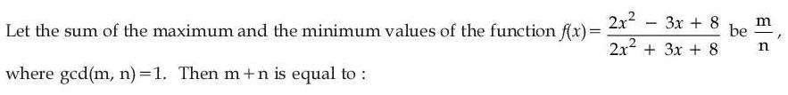
Hint 1: Set f(x) = y and ask for which y the resulting quadratic in x has real roots.
Hint 2: (2y − 2)x² + (3y + 3)x + 8y − 8 = 0. Discriminant ≥ 0.
What this tests: Range of a rational function.
1. 9(y + 1)² − 64(y − 1)² ≥ 0 gives (3y + 3 − 8y + 8)(3y + 3 + 8y − 8) ≥ 0, so 5/11 ≤ y ≤ 11/5.
2. Sum = 11/5 + 5/11 = 146/55, so m + n = 201.
Answer: (3)
If this felt hard: Revise 'Quadratic Equations'.
Claude’s answer: 3 · NTA final key: 3 · agrees · Answer recomputed with SymPy (tools/verify_pyq_solutions.py)
Q13 · Mathematics · MCQ · ID 87827055440
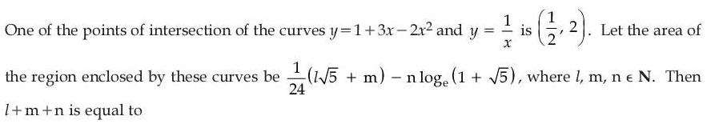
(4) 
Hint 1: Find the other intersection: x(1 + 3x − 2x²) = 1.
Hint 2: 2x³ − 3x² − x + 1 = 0 has root x = 1/2, so it factors as (2x − 1)(x² − x − 1). The other positive root is (1 + √5)/2.
What this tests: Area between a parabola and a hyperbola.
1. Area = ∫ from 1/2 to (1 + √5)/2 of (1 + 3x − 2x² − 1/x) dx.
2. = 5/8 + 7√5/12 − ln(1 + √5) = (1/24)(14√5 + 15) − ln(1 + √5).
3. l + m + n = 14 + 15 + 1 = 30.
Answer: (1)
If this felt hard: Revise 'Application of Integrals'.
Claude’s answer: 1 · NTA final key: 1 · agrees · Answer recomputed with SymPy (tools/verify_pyq_solutions.py)
Q14 · Mathematics · MCQ · ID 87827055441
(1)
(2) 
(3) 
(4)
Hint 1: Factor the quartic: try (x² + 1)(x² + 2x + 2).
Hint 2: x⁴ + 2x³ + 3x² + 2x + 2 = (x² + 1)(x² + 2x + 2) and 2x² + 2x + 3 = (x² + 1) + (x² + 2x + 2).
What this tests: Variable separable differential equation with partial fractions.
1. dy/dx = 1/(x² + 2x + 2) + 1/(x² + 1), so y = tan−1(x + 1) + tan−1x + C.
2. y(−1) = 0 − π/4 + C = −π/4, so C = 0.
3. y(0) = π/4.
Answer: (1)
If this felt hard: Revise 'Differential Equations' and 'Integrals'.
Claude’s answer: 1 · NTA final key: 1 · agrees · Answer recomputed with SymPy (tools/verify_pyq_solutions.py)
Q15 · Mathematics · MCQ · ID 87827055442
(1)
(2)
(3)
(4) 
Hint 1: The vertices lie on the circle. Write each vertex as centre + vi, where the vi add to zero.
Hint 2: Centre (5, 3), radius 2. Σ|centre + vi|² = 4|centre|² + 2 centre·Σvi + Σ|vi|².
What this tests: Square inscribed in a circle.
1. Σvi = 0 and |vi| = 2.
2. Σ(x² + y²) = 4 × 34 + 4 × 4 = 152.
Answer: (2)
If this felt hard: Revise 'Conic Sections' (circle). The direction of the sides does not matter.
Claude’s answer: 2 · NTA final key: 2 · agrees · Answer recomputed with SymPy (tools/verify_pyq_solutions.py)
Q16 · Mathematics · MCQ · ID 87827055443
(1)
(2)
(3)
(4)
Hint 1: Find the three side lines. Shifting a side inwards by 1 means moving its line 1 unit towards the opposite vertex.
Hint 2: AB: x − y + 4 = 0; BC: 3x + 5y − 4 = 0; CA: x + y − 2 = 0.
What this tests: Parallel lines at a given distance.
1. Shifted inward: AB → x − y + 4 − √2 = 0; BC → 3x + 5y − 4 − √34 = 0; CA → x + y − 2 + √2 = 0.
2. Distances from O: (4 − √2)/√2 ≈ 1.83, (4 + √34)/√34 ≈ 1.69, (2 − √2)/√2 ≈ 0.41.
3. Nearest: x + y − (2 − √2) = 0.
Answer: (1)
If this felt hard: Revise 'Straight Lines'.
Claude’s answer: 1 · NTA final key: 1 · agrees · Answer recomputed with SymPy (tools/verify_pyq_solutions.py)
Q17 · Mathematics · MCQ · ID 87827055444
(1)
(2)
(3)
(4)
Hint 1: Move 9 units from P along the unit vector of PQ, in both directions, and compare distances from O.
Hint 2: PQ = (4, −2, 4), |PQ| = 6. 9 units along it = (6, −3, 6).
What this tests: Points on a line at a given distance.
1. Points: (7, −5, 9) and (−5, 1, −3).
2. |(7, −5, 9)|² = 155, |(−5, 1, −3)|² = 35. The farther one gives 155.
Answer: (4)
If this felt hard: Revise 'Three Dimensional Geometry'.
Claude’s answer: 4 · NTA final key: 4 · agrees · Answer recomputed with SymPy (tools/verify_pyq_solutions.py)
Q18 · Mathematics · MCQ · ID 87827055445
(1)
(2)
(3)
(4)
Hint 1: Write c = (a, b, c) with a² + b² + c² = 1 and turn each angle into a dot-product equation.
Hint 2: c·(2, 2, −1) = 3 cos 60° = 3/2 and c·(1, 0, −1) = √2 cos 45° = 1.
What this tests: Unit vector from angle conditions.
1. Solving with the unit condition: c = (√2/3 + 1/2, −1/(3√2), √2/3 − 1/2) is one solution.
2. Adding (−1/2, 1/(3√2), −√2/3) gives (√2/3) î − (1/2) k̂.
Answer: (3)
If this felt hard: Revise 'Vector Algebra'.
Claude’s answer: 3 · NTA final key: 3 · agrees · Answer recomputed with SymPy (tools/verify_pyq_solutions.py)
Q19 · Mathematics · MCQ · ID 87827055446
(1)
(2)
(3)
(4)
Hint 1: Bayes' theorem with each urn chosen with probability 1/3.
Hint 2: P(black | A) = 5/12, P(black | B) = 7/12, P(black | C) = 6/12.
What this tests: Bayes' theorem.
1. P(A | black) = (5/12)/((5 + 7 + 6)/12) = 5/18.
Answer: (3)
If this felt hard: Revise 'Probability'.
Claude’s answer: 3 · NTA final key: 3 · agrees · Answer recomputed with SymPy (tools/verify_pyq_solutions.py)
Q20 · Mathematics · MCQ · ID 87827055447
(1)
(2)
(3)
(4)
Hint 1: Use the mean for α + β and the variance for α² + β².
Hint 2: Sum = 12, so α + β = 10. Σx² = 6(23 + 4) = 162, so α² + β² = 162 − 110 = 52.
What this tests: Mean deviation about the mean.
1. α, β = 6 and 4.
2. Deviations from 2: 5, 2, 5, 8, 4, 2: sum 26.
3. Mean deviation = 26/6 = 13/3.
Answer: (4)
If this felt hard: Revise 'Statistics'.
Claude’s answer: 4 · NTA final key: 4 · agrees · Answer recomputed with SymPy (tools/verify_pyq_solutions.py)
Q21 · Mathematics · Numerical · ID 87827055448
Hint 1: 210 students studied at least one subject. Write inclusion–exclusion with x = number studying all three.
Hint 2: M + P + C − 120 + x = 210, so M + P + C = 330 − x. Each 'only' region must be non-negative.
What this tests: Venn diagrams with inequalities.
1. Ranges: M ≤ 130, P ≤ 95, C ≤ 90 give 330 − x ≤ 315, so x ≥ 15.
2. Pairwise counts force x ≤ 30 (both P and C are 30), and x = 30 works with M + P + C = 300 (e.g. 125 + 90 + 85, checking all 'only' regions ≥ 0).
3. m + n = 15 + 30 = 45.
Answer: 45
If this felt hard: Revise 'Sets'.
Claude’s answer: 45 · NTA final key: 45 · agrees · Answer recomputed with SymPy (tools/verify_pyq_solutions.py)
Q22 · Mathematics · Numerical · ID 87827055449
Hint 1: A(1, 1, 1)ᵀ = 3(1, 1, 1)ᵀ means every row adds up to 3.
Hint 2: Each row has non-negative entries summing to 3, so its length is at most 3. Hadamard's inequality: |det A| ≤ product of row lengths.
What this tests: Bounding a determinant.
1. det A ≤ 3 × 3 × 3 = 27.
2. A = 3I reaches it.
Answer: 27
If this felt hard: Revise 'Determinants'.
Claude’s answer: 27 · NTA final key: 27 · agrees · Answer recomputed with SymPy (tools/verify_pyq_solutions.py)
Q23 · Mathematics · Numerical · ID 87827055450
Hint 1: b's numerators are row sums of Pascal's triangle. For a, simplify C(n, 2)/(n + 1)!.
Hint 2: Σk C(n, k) = 2ⁿ, so b = Σ 2ⁿ/n! = e². C(n, 2)/(n + 1)! = (n − 1)n/(2(n + 1)!) — use n(n − 1)/(n + 1)! = 1/(n − 1)! − 2/n! + 2/(n + 1)!.
What this tests: Series for e.
1. Σn≥2 n(n − 1)/(n + 1)! = (e − 1) − 2(e − 2) + 2(e − 5/2) = e − 2, so a = 1 + (e − 2)/2 = e/2.
2. 2b/a² = 2e²/(e²/4) = 8.
Answer: 8
If this felt hard: Revise 'Sequences and Series' (exponential series).
Claude’s answer: 8 · NTA final key: 8 · agrees · Answer recomputed with SymPy (tools/verify_pyq_solutions.py)
Q24 · Mathematics · Numerical · ID 87827055451
Hint 1: Both top and bottom are 0 at x = 1. Use L'Hôpital or rationalise.
Hint 2: Numerator derivative at 1: (5/3)6−2/3 − (1/3)6−2/3 = (4/3)6−2/3. Denominator: 1/√5 − 1/(2√5) = 1/(2√5).
What this tests: Limits by L'Hôpital's rule.
1. Limit = (8√5/3)6−2/3 = 8√5/(3 × 62/3).
2. Compare with m√5/(n(2n)2/3): n = 3, m = 8.
3. 8m + 12n = 64 + 36 = 100.
Answer: 100
If this felt hard: Revise 'Limits and Derivatives'.
Claude’s answer: 100 · NTA final key: 100 · agrees · Answer recomputed with SymPy (tools/verify_pyq_solutions.py)
Q25 · Mathematics · Numerical · ID 87827055452
Hint 1: Divide top and bottom by cos²x and put t = tan x.
Hint 2: Integral = ∫01 t²/((1 + t²)(1 + t + t²)) dt. Partial fractions: t²/((1 + t²)(1 + t + t²)) = t/(1 + t²) − t/(1 + t + t²).
What this tests: Integration by substitution and partial fractions.
1. ∫01 t/(1 + t²) dt = (1/2) ln 2. ∫01 t/(1 + t + t²) dt = (1/2) ln 3 − π/(6√3).
2. Integral = (1/2) ln(2/3) + π/(6√3).
3.
2. So a = 2 and b = 6: a + b = 8.
Answer: 8
If this felt hard: Revise 'Integrals'.
Claude’s answer: 8 · NTA final key: 8 · agrees · Answer recomputed with SymPy (tools/verify_pyq_solutions.py)
Q26 · Mathematics · Numerical · ID 87827055453
Hint 1: Linear equation with integrating factor e−x.
Hint 2: (ye−x)' = (1 + 4 sin x)e−x. ∫ sin x e−x dx = −e−x(sin x + cos x)/2.
What this tests: Linear differential equation.
1. y = −1 − 2(sin x + cos x) + Cex. y(π) = −1 + 2 + Ceπ = 1 gives C = 0.
2. y(π/2) = −1 − 2 = −3, so y(π/2) + 10 = 7.
Answer: 7
If this felt hard: Revise 'Differential Equations'.
Claude’s answer: 7 · NTA final key: 7 · agrees · Answer recomputed with SymPy (tools/verify_pyq_solutions.py)
Q27 · Mathematics · ID 87827055454
Left out of the bank: dropped (NTA).
Q28 · Mathematics · Numerical · ID 87827055455
Hint 1: Focal chord length of y² = 4ax at angle θ is 4a cosec²θ.
Hint 2: a = 3: 12 cosec²θ = 15, so sin²θ = 4/5. The chord passes through the focus (3, 0).
What this tests: Focal chords of a parabola.
1. Distance from O to the chord = 3 sin θ, so p² = 9 × 4/5 = 36/5.
2. 10p² = 72.
Answer: 72
If this felt hard: Revise 'Conic Sections'.
Claude’s answer: 72 · NTA final key: 72 · agrees · Answer recomputed with SymPy (tools/verify_pyq_solutions.py)
Q29 · Mathematics · Numerical · ID 87827055456
Hint 1: Find k from the shortest distance first. Then split the integral where x² crosses an integer.
Hint 2: d1 × d2 = (2, 3, 4) × (1, −3, 2) = (18, 0, −9). AB = (5, 5, −9). SD = |90 + 81|/√405 = 171/(9√5) = 19/√5.
What this tests: Shortest distance between skew lines; integral of [x²].
1. 19/√5 = (38/(3√5))k gives k = 3/2.
2. ∫03/2[x²] dx = 0 + 1(√2 − 1) + 2(3/2 − √2) = 2 − √2, so α = 2.
3. 6α³ = 48.
Answer: 48
If this felt hard: Revise 'Three Dimensional Geometry' and 'Integrals'.
Claude’s answer: 48 · NTA final key: 48 · agrees · Answer recomputed with SymPy (tools/verify_pyq_solutions.py)
Q30 · Mathematics · Numerical · ID 87827055457
Hint 1: BC = AC − AB. The area is (1/2)|AB × AC|; use it to find d.
Hint 2: AB × AC = (1, 2, −7) × (6, d, −2) = (7d − 4, −40, d − 12).
What this tests: Area of a triangle with vectors.
1. (7d − 4)² + 1600 + (d − 12)² = 4 × 450 = 1800 gives 50d² − 80d − 40 = 0, so d = 2 (d > 0).
2. |AB|² = 54, |AC|² = 44, |BC|² = |(5, 0, 5)|² = 50.
3. Largest side² = 54.
Answer: 54
If this felt hard: Revise 'Vector Algebra'.
Claude’s answer: 54 · NTA final key: 54 · agrees · Answer recomputed with SymPy (tools/verify_pyq_solutions.py)
Q31 · Physics · MCQ · ID 87827055458
(1)
(2)
(3)
(4)
Hint 1: The argument of a sine must be dimensionless. What does that make n?
Hint 2: 2πnt/λ is dimensionless, so [n] = [λ]/[t] = LT−1. 2πx/λ is dimensionless too.
What this tests: Dimensional analysis of a wave equation.
1. [nt] = L: correct. [x] = L: correct. [n] = LT−1: correct.
2. [n/λ] = T−1, not T. That statement is NOT correct.
Answer: (4)
If this felt hard: Revise 'Units and Measurements' and 'Waves'.
Claude’s answer: 4 · NTA final key: 4 · agrees · Theory question: not computable, needs a teacher’s review
Q32 · Physics · MCQ · ID 87827055459
(1)
(2)
(3)
(4)
Hint 1: Find the velocity and acceleration vectors. Is a constant? Is it along v?
Hint 2: v = (4, 3 + 16t), a = (0, 16).
What this tests: Motion in a plane with constant acceleration.
1. Constant acceleration, not parallel to the initial velocity (4, 3).
2. So the path is a parabola: uniformly accelerated along a parabolic path.
Answer: (3)
If this felt hard: Revise 'Motion in a Plane'.
Claude’s answer: 3 · NTA final key: 3 · agrees · Answer recomputed with SymPy (tools/verify_pyq_solutions.py)
Q33 · Physics · MCQ · ID 87827055460
(1)
(2)
(3)
(4)
Hint 1: Take the ground as smooth (no friction is mentioned). How does a depend on t if F = kt?
Hint 2: Newton's second law: a = F/m = (k/m)t.
What this tests: Newton's second law with a time-varying force.
1. a is proportional to t: a straight line through the origin.
Answer: (2)
If this felt hard: Revise 'Laws of Motion'.
Claude’s answer: 2 · NTA final key: 2 · agrees · Theory question: not computable, needs a teacher’s review
Note: NTA's key assumes no friction. With friction the block would stay at rest until F exceeds the limiting friction, and the line would start later. Worth a teacher look.
Q34 · Physics · MCQ · ID 87827055461
(1)
(2)
(3)
(4)
Hint 1: Distance in the n-th second: sn = u + a(n − 1/2). Compare the n-th and (n + 2)-th seconds.
Hint 2: sn+2 − sn = 2a.
What this tests: Distance in the n-th second.
1. 2a = 115.0 − 102.5 = 12.5, so a = 6.25 m/s².
Answer: (2)
If this felt hard: Revise 'Motion in a Straight Line'.
Claude’s answer: 2 · NTA final key: 2 · agrees · Answer recomputed with SymPy (tools/verify_pyq_solutions.py)
Q35 · Physics · MCQ · ID 87827055462
(1)
(2)
(3)
(4)
Hint 1: Energy just before impact is mgh; after the bounce it rises to h/2.
Hint 2: The ball keeps energy mgh/2. Speed before impact from v² = 2gh.
What this tests: Energy loss in a bounce.
1. Loss = 50%.
2. v = √(2gh).
Answer: (2)
If this felt hard: Revise 'Work, Energy and Power'.
Claude’s answer: 2 · NTA final key: 2 · agrees · Answer recomputed with SymPy (tools/verify_pyq_solutions.py)
Q36 · Physics · MCQ · ID 87827055463
(1)
(2)
(3)
(4)
Hint 1: The field at the centre of a uniform semicircular arc of radius R and linear density λ is 2Gλ/R.
Hint 2: λ = M/L and πR = L, so R = L/π.
What this tests: Gravitational field of an arc.
1. F = m × 2G(M/L)/(L/π) = 2πGMm/L².
Answer: (3)
If this felt hard: Revise 'Gravitation'.
Claude’s answer: 3 · NTA final key: 3 · agrees · Answer recomputed with SymPy (tools/verify_pyq_solutions.py)
Q37 · Physics · MCQ · ID 87827055464
(1)
(2)
(3)
(4)
Hint 1: Statement I is hydrostatics. For Statement II, apply Bernoulli between the two sections: which pressure is higher, and which speed?
Hint 2: Bernoulli: P1 + (1/2)ρv1² = P2 + (1/2)ρv2². The manometer gives P1 − P2 = ρgh.
What this tests: Hydrostatics; Bernoulli and the venturimeter.
1. Statement I: for a fluid at rest, P1 − P2 = ρg(h2 − h1): correct.
2. Statement II: from Bernoulli, 2gh = v2² − v1², not v1² − v2²: incorrect.
Answer: (3)
If this felt hard: Revise 'Mechanical Properties of Fluids'.
Claude’s answer: 3 · NTA final key: 3 · agrees · Theory question: not computable, needs a teacher’s review
Note: Figure reading: the higher liquid column is above section 1, so P_{1} > P_{2} and v_{2} > v_{1}.
Q38 · Physics · MCQ · ID 87827055465
(1)
(2)
(3)
(4)
Hint 1: A temperature change in °F is 9/5 of the change in °C (the 32 offset cancels).
Hint 2: ΔF = (9/5)ΔC.
What this tests: Temperature scales.
1. ΔF = (9/5)(40) = 72 °F.
Answer: (1)
If this felt hard: Revise 'Thermal Properties of Matter'.
Claude’s answer: 1 · NTA final key: 1 · agrees · Answer recomputed with SymPy (tools/verify_pyq_solutions.py)
Q39 · Physics · MCQ · ID 87827055466
(1)
(2)
(3)
(4)
Hint 1: Write the ideal gas law in terms of density: P = ρRT/M.
Hint 2: On a P–T graph the slope is ρR/M: a steeper line means a larger density.
What this tests: Ideal gas law with density.
1. ρ1 is steepest, then ρ2, then ρ3: ρ1 > ρ2 > ρ3.
Answer: (4)
If this felt hard: Revise 'Kinetic Theory'.
Claude’s answer: 4 · NTA final key: 4 · agrees · Theory question: not computable, needs a teacher’s review
Q40 · Physics · MCQ · ID 87827055467
(1)
(2)
(3)
(4)
Hint 1: The line charge's field provides the centripetal force on the electron.
Hint 2: eλ/(2πε0r) = mv²/r.
What this tests: Field of a line charge; circular motion.
1. mv² = eλ/(2πε0), independent of r.
2. KE = (1/2)mv² is constant: a horizontal line.
Answer: (4)
If this felt hard: Revise 'Electric Charges and Fields'.
Claude’s answer: 4 · NTA final key: 4 · agrees · Answer recomputed with SymPy (tools/verify_pyq_solutions.py)
Q41 · Physics · MCQ · ID 87827055468
(1)
(2)
(3)
(4)
Hint 1: Use Rt = R0(1 + αt) with the ice and steam points.
Hint 2: 10 = 8(1 + 100α), so α = 1/400 per °C.
What this tests: Platinum resistance thermometer.
1. R400 = 8(1 + 1) = 16 Ω.
Answer: (3)
If this felt hard: Revise 'Current Electricity'.
Claude’s answer: 3 · NTA final key: 3 · agrees · Answer recomputed with SymPy (tools/verify_pyq_solutions.py)
Q42 · Physics · MCQ · ID 87827055469
(1)
(2)
(3)
(4)
Hint 1: Inside a long solenoid B is along the axis. What is the magnetic force on a charge moving parallel to B?
Hint 2: F = q(v × B) = 0 when v ∥ B.
What this tests: Magnetic force on a moving charge.
1. No force acts, so the electron keeps moving with uniform velocity along the axis.
Answer: (4)
If this felt hard: Revise 'Moving Charges and Magnetism'.
Claude’s answer: 4 · NTA final key: 4 · agrees · Theory question: not computable, needs a teacher’s review
Q43 · Physics · MCQ · ID 87827055470
(1)
(2)
(3)
(4)
Hint 1: Current zero when voltage is maximum means a 90° phase difference. Which elements give that?
Hint 2: Pure L: current lags by 90°. Pure C: current leads by 90°. A pure resistor keeps them in phase.
What this tests: Phase in AC circuits.
1. Inductor (A), capacitor (B) and an L–C combination (D) all give a 90° phase difference.
2. A pure resistor (C) does not.
Answer: (3)
If this felt hard: Revise 'Alternating Current'.
Claude’s answer: 3 · NTA final key: 3 · agrees · Theory question: not computable, needs a teacher’s review
Q44 · Physics · MCQ · ID 87827055471
(1)
(2)
(3)
(4)
Hint 1: E, B and the direction of travel are mutually perpendicular, with B = E/c.
Hint 2: The wave travels along +z, E is along î, so B must be along ĵ (î × ĵ = k̂).
What this tests: Relation between E and B in an EM wave.
1. B = ĵ (40/c) cos ω(t − z/c).
Answer: (3)
If this felt hard: Revise 'Electromagnetic Waves'.
Claude’s answer: 3 · NTA final key: 3 · agrees · Answer recomputed with SymPy (tools/verify_pyq_solutions.py)
Q45 · Physics · MCQ · ID 87827055472
(1)
(2)
(3)
(4)
Hint 1: Powers of lenses in contact add.
Hint 2: Each lens has power 25/5 = 5 D.
What this tests: Lenses in contact.
1. f = 1/5 m = 20 cm.
Answer: (1)
If this felt hard: Revise 'Ray Optics and Optical Instruments'.
Claude’s answer: 1 · NTA final key: 1 · agrees · Answer recomputed with SymPy (tools/verify_pyq_solutions.py)
Q46 · Physics · MCQ · ID 87827055473
(1)
(2)
(3)
(4)
Hint 1: What changes with intensity: the stopping potential or the saturation current?
Hint 2: Same wavelength means the same stopping potential. Higher intensity means more photoelectrons, so a higher saturation current.
What this tests: Photoelectric current–voltage graphs.
1. Both curves start at the same −V0; the I2 curve saturates higher.
Answer: (2)
If this felt hard: Revise 'Dual Nature of Radiation and Matter'.
Claude’s answer: 2 · NTA final key: 2 · agrees · Theory question: not computable, needs a teacher’s review
Q47 · Physics · MCQ · ID 87827055474
(1)
(2)
(3)
(4)
Hint 1: Check that mass number and charge balance: 235 + 1 = 236 nucleons and 92 protons.
Hint 2: Add up the mass numbers and atomic numbers of the products in each option.
What this tests: Conservation in nuclear reactions.
1. ¹⁴⁴Ba + ⁸⁹Kr + 3n: 144 + 89 + 3 = 236 and 56 + 36 = 92. Balanced.
2. The others fail one of the counts.
Answer: (2)
If this felt hard: Revise 'Nuclei'.
Claude’s answer: 2 · NTA final key: 2 · agrees · Answer recomputed with SymPy (tools/verify_pyq_solutions.py)
Q48 · Physics · MCQ · ID 87827055475
(1)
(2)
(3)
(4)
Hint 1: Current flows from −6 V to −8 V (left to right). Which diode is forward biased?
Hint 2: The middle diode points right: forward biased, it conducts. The bottom diode points left: reverse biased, an open circuit.
What this tests: Diodes in resistor networks.
1. The 5 Ω branch carries no current.
2. Net resistance = 15 Ω ∥ 10 Ω = 150/25 = 6 Ω.
Answer: (4)
If this felt hard: Revise 'Semiconductor Electronics'.
Claude’s answer: 4 · NTA final key: 4 · agrees · Answer recomputed with SymPy (tools/verify_pyq_solutions.py)
Q49 · Physics · MCQ · ID 87827055476
(1)
(2)
(3)
(4)
Hint 1: Differentiate the lens formula 1/f = 1/v − 1/u.
Hint 2: df/f² = dv/v² + du/u² (taking the errors to add).
What this tests: Error in focal length.
1. Δf = f²(Δu/u² + Δv/v²).
Answer: (4)
If this felt hard: Revise 'Units and Measurements' and 'Ray Optics'.
Claude’s answer: 4 · NTA final key: 4 · agrees · Answer recomputed with SymPy (tools/verify_pyq_solutions.py)
Q50 · Physics · MCQ · ID 87827055477
(1)
(2)
(3)
(4)
Hint 1: The balance length is proportional to the terminal voltage V = ER/(R + r).
Hint 2: [10/(10 + r)]/[1/(1 + r)] = 500/400.
What this tests: Potentiometer: internal resistance of a cell.
1. 10(1 + r) = 1.25(10 + r), so 8.75r = 2.5.
2. r ≈ 0.29 Ω ≈ 0.3 Ω.
Answer: (3)
If this felt hard: Revise 'Current Electricity'.
Claude’s answer: 3 · NTA final key: 3 · agrees · Answer recomputed with SymPy (tools/verify_pyq_solutions.py)
Q51 · Physics · Numerical · ID 87827055478
Hint 1: Take the forces F and 3F with angle θ. Use R² = F1² + F2² + 2F1F2 cos θ with R = 3F.
Hint 2: 9F² = F² + 9F² + 6F² cos θ.
What this tests: Resultant of two forces.
1. cos θ = −1/6, so |n| = 6.
Answer: 6
If this felt hard: Revise 'Motion in a Plane' (vectors).
Claude’s answer: 6 · NTA final key: 6 · agrees · Answer recomputed with SymPy (tools/verify_pyq_solutions.py)
Q52 · Physics · Numerical · ID 87827055479
Hint 1: All the kinetic energy (translational + rotational) becomes potential energy: mgh = (1/2)mv²(1 + k²/R²).
Hint 2: Solid sphere: k²/R² = 2/5. Hollow cylinder: k²/R² = 1.
What this tests: Rolling bodies up an incline.
1. h1 = (7/10)v²/g, h2 = v²/g.
2. h1 : h2 = 7/10, so n = 7.
Answer: 7
If this felt hard: Revise 'System of Particles and Rotational Motion'.
Claude’s answer: 7 · NTA final key: 7 · agrees · Answer recomputed with SymPy (tools/verify_pyq_solutions.py)
Q53 · Physics · Numerical · ID 87827055480
Hint 1: A soap bubble has two surfaces. Work = T × increase in total area.
Hint 2: W = 2 × 4π(R² − r²)T with r = 3.5 cm and T = 40 dyne/cm.
What this tests: Surface energy of a soap bubble.
1. 36960 = 8 × (22/7) × 40 × (R² − 12.25), so R² − 12.25 = 36.75.
2. R² = 49, R = 7 cm.
Answer: 7
If this felt hard: Revise 'Mechanical Properties of Fluids'.
Claude’s answer: 7 · NTA final key: 7 · agrees · Answer recomputed with SymPy (tools/verify_pyq_solutions.py)
Q54 · Physics · Numerical · ID 87827055481
Hint 1: Write T = k(L − L0) for both cases.
Hint 2: 3 = k(a − L0) and 2 = k(b − L0), so a − b = 1/k and L0 = a − 3/k.
What this tests: Hooke's law for a spring.
1. For length 3a − 2b: T = k(3a − 2b − a + 3/k) = 2k(a − b) + 3 = 2 + 3 = 5 N.
Answer: 5
If this felt hard: Revise 'Mechanical Properties of Solids' / 'Oscillations'.
Claude’s answer: 5 · NTA final key: 5 · agrees · Answer recomputed with SymPy (tools/verify_pyq_solutions.py)
Q55 · Physics · Numerical · ID 87827055482
Hint 1: Sheet: E = σ/(2ε0) at any distance. Line: E = λ/(2πε0r). The point (0, 0, 2) is 2 m from the line at z = 4.
Hint 2: Ratio = [σ/(2ε0)]/[λ/(4πε0)] = 2πσ/λ.
What this tests: Fields of a charged sheet and a line charge.
1. With σ = 2λ, the ratio is 4π = π√16.
2. n = 16.
Answer: 16
If this felt hard: Revise 'Electric Charges and Fields'.
Claude’s answer: 16 · NTA final key: 16 · agrees · Answer recomputed with SymPy (tools/verify_pyq_solutions.py)
Q56 · Physics · Numerical · ID 87827055483
Hint 1: Use symmetry about the plane through a and c. Which nodes are at equal potential?
Hint 2: a and c are ends of a face diagonal. Write the node equations (Kirchhoff) or use symmetry: e and f are the bottom ends of the edges from b and c.
What this tests: Resistor networks (cube).
1. Solving the network with Va = 6 V and Vc = 0: Ve − Vf = 1 V.
Answer: 1
If this felt hard: Revise 'Current Electricity'.
Claude’s answer: 1 · NTA final key: 1 · agrees · Answer recomputed with SymPy (tools/verify_pyq_solutions.py)
Note: Figure reading: e is below b and f is below c; the battery has no internal resistance.
Q57 · Physics · Numerical · ID 87827055484
Hint 1: B depends only on x. Which edges' forces cancel and which do not?
Hint 2: Top and bottom edges see the same B along their lengths and carry opposite currents: they cancel. The two vertical edges are at x = 2 and x = 2.5.
What this tests: Force on a loop in a non-uniform field.
1. B(2) = 1.0 T, B(2.5) = 1.2 T.
2. Net force = IL(B2 − B1) = 0.5 × 0.5 × 0.2 = 0.05 N = 50 mN.
Answer: 50
If this felt hard: Revise 'Moving Charges and Magnetism'.
Claude’s answer: 50 · NTA final key: 50 · agrees · Answer recomputed with SymPy (tools/verify_pyq_solutions.py)
Q58 · Physics · Numerical · ID 87827055485
Hint 1: For i = A + B sin ωt, the mean of i² over a cycle is A² + B²/2.
Hint 2: A = 6, B = √56.
What this tests: RMS value of a current with a DC part.
1. irms = √(36 + 28) = 8 A.
Answer: 8
If this felt hard: Revise 'Alternating Current'.
Claude’s answer: 8 · NTA final key: 8 · agrees · Answer recomputed with SymPy (tools/verify_pyq_solutions.py)
Q59 · Physics · Numerical · ID 87827055486
Hint 1: Bright fringes overlap when n1λ1 = n2λ2.
Hint 2: 450n1 = 650n2, i.e. 9n1 = 13n2.
What this tests: Overlapping fringes in Young's experiment.
1. Smallest whole numbers: n2 = 9, n1 = 13.
Answer: 9
If this felt hard: Revise 'Wave Optics'.
Claude’s answer: 9 · NTA final key: 9 · agrees · Answer recomputed with SymPy (tools/verify_pyq_solutions.py)
Q60 · Physics · Numerical · ID 87827055487
Hint 1: The atom recoils, taking kinetic energy E²/(2Mc²) from the photon. Compare that with E.
Hint 2: E = 13.6(1/4 − 1/9) ≈ 1.89 eV. Mc² = 1.6 × 10−27 × 9 × 1016 J = 9 × 10⁸ eV.
What this tests: Recoil of an atom on emitting a photon.
1. Fractional change in λ ≈ E/(2Mc²) = 1.89/(1.8 × 10⁹) ≈ 1.05 × 10−9.
2. Percentage change ≈ 1 × 10−7, so n = 7.
Answer: 7
If this felt hard: Revise 'Atoms' and 'Dual Nature of Radiation and Matter'.
Claude’s answer: 7 · NTA final key: 7 · agrees · Answer recomputed with SymPy (tools/verify_pyq_solutions.py)
Q61 · Chemistry · MCQ · ID 87827055488
(1) 
(2)
(3)
(4) 
Hint 1: Moles = mass/molar mass; molarity = moles/volume in litres.
Hint 2: 58.5 g/mol for NaCl.
What this tests: Molarity.
1. 5.85/58.5 = 0.1 mol in 0.5 L: 0.2 M.
Answer: (3)
If this felt hard: Revise 'Some Basic Concepts of Chemistry'.
Claude’s answer: 3 · NTA final key: 3 · agrees · Theory question: not computable, needs a teacher’s review
Note: Treats 500 mL of water as the solution volume, as intended.
Q62 · Chemistry · MCQ · ID 87827055489
(1)
(2)
(3)
(4)
Hint 1: Symmetric molecules have zero dipole. In NH3 and NF3, does the lone pair add to or oppose the bond dipoles?
Hint 2: CH4 and PF5 are symmetric. In NH3 the N–H dipoles point towards N, the same way as the lone pair.
What this tests: Dipole moments.
1. NH3 (1.47 D) > NF3 (0.23 D) > CH4 = PF5 = 0.
Answer: (2)
If this felt hard: Revise 'Chemical Bonding and Molecular Structure'.
Claude’s answer: 2 · NTA final key: 2 · agrees · Theory question: not computable, needs a teacher’s review
Q63 · Chemistry · MCQ · ID 87827055490
(1)
(2)
(3)
(4)
Hint 1: A stronger acid has a weaker conjugate base. Order the acids: ROH, H2O, CH3COOH, HCl.
Hint 2: Acid strength: HCl > CH3COOH > H2O > ROH.
What this tests: Conjugate acid–base strength.
1. Base strength: RO⁻ > OH⁻ > CH3COO⁻ > Cl⁻.
Answer: (2)
If this felt hard: Revise 'Equilibrium' and 'Alcohols, Phenols and Ethers'.
Claude’s answer: 2 · NTA final key: 2 · agrees · Theory question: not computable, needs a teacher’s review
Q64 · Chemistry · MCQ · ID 87827055491
(1)
(2)
(3)
(4)
Hint 1: The calomel electrode is Hg | Hg2Cl2(s) | Cl⁻. What kind is that?
Hint 2: A metal in contact with its insoluble salt and a solution of the salt's anion.
What this tests: Types of electrodes.
1. Metal–insoluble salt–anion electrode.
Answer: (3)
If this felt hard: Revise 'Electrochemistry'.
Claude’s answer: 3 · NTA final key: 3 · agrees · Theory question: not computable, needs a teacher’s review
Q65 · Chemistry · MCQ · ID 87827055492
(1)
(2)
(3) 
(4) 
Hint 1: Write the Nernst equation for 2H⁺ + 2e⁻ → H2 with [H⁺] = 10−7 M.
Hint 2: E = −(0.059/2) log(pH2/[H⁺]²).
What this tests: Nernst equation for the hydrogen electrode.
1. E = 0 needs pH2 = [H⁺]² = 10−14 bar.
Answer: (2)
If this felt hard: Revise 'Electrochemistry'.
Claude’s answer: 2 · NTA final key: 2 · agrees · Theory question: not computable, needs a teacher’s review
Q66 · Chemistry · MCQ · ID 87827055493
(1)
(2)
(3)
(4)
Hint 1: Across period 2, IE rises but with two dips: B < Be and O < N.
Hint 2: Values (kJ/mol): B 801, Be 899, O 1314, N 1402, F 1681.
What this tests: First ionisation enthalpy trends.
1. B < Be < O < N < F, i.e. E < C < A < B < D.
Answer: (3)
If this felt hard: Revise 'Classification of Elements and Periodicity in Properties'.
Claude’s answer: 3 · NTA final key: 3 · agrees · Theory question: not computable, needs a teacher’s review
Q67 · Chemistry · MCQ · ID 87827055494
(1) 
(2) 
(3) 
(4)
Hint 1: Group valency = number of valence electrons (or 8 minus it). Which period-2 elements cannot reach it?
Hint 2: N, O and F have no d orbitals, so they cannot show 5, 6 and 7 bonds.
What this tests: Valency and the octet rule.
1. N, O, F cannot; B, C, S, P, Al, Si can.
2. Count = 3.
Answer: (2)
If this felt hard: Revise 'Classification of Elements and Periodicity in Properties' and 'p-Block Elements'.
Claude’s answer: 2 · NTA final key: 2 · agrees · Theory question: not computable, needs a teacher’s review
Q68 · Chemistry · MCQ · ID 87827055495
(1) 
(2) 
(3) 
(4) 
Hint 1: Count σ bonds plus lone pairs on the central atom: 4 means sp³.
Hint 2: NO₃⁻: 3 + 0. BCl3: 3 + 0. ClO₂⁻: 2 + 2. ClO₃⁻: 3 + 1.
What this tests: Hybridisation.
1. sp³: ClO₂⁻ and ClO₃⁻: 2.
Answer: (2)
If this felt hard: Revise 'Chemical Bonding and Molecular Structure'.
Claude’s answer: 2 · NTA final key: 2 · agrees · Theory question: not computable, needs a teacher’s review
Q69 · Chemistry · MCQ · ID 87827055496
(1)
(2)
(3)
(4)
Hint 1: Which 3d element shows only +3 (besides 0)?
Hint 2: Scandium has 3d¹4s²: losing all three gives a noble-gas core.
What this tests: Oxidation states of 3d elements.
1. Scandium shows only +3.
Answer: (2)
If this felt hard: Revise 'd- and f-Block Elements'.
Claude’s answer: 2 · NTA final key: 2 · agrees · Theory question: not computable, needs a teacher’s review
Q70 · Chemistry · MCQ · ID 87827055497
(1)
(2)
(3)
(4)
Hint 1: Recall the spectrochemical series: I⁻ < Br⁻ < S²⁻ < … < F⁻ < OH⁻ < H2O < NCS⁻ < … < NH3 < en < CN⁻ < CO.
Hint 2: CO is the strongest field ligand; halides and S²⁻ are weak.
What this tests: Spectrochemical series.
1. CO > H2O > F⁻ > S²⁻ follows the series.
Answer: (1)
If this felt hard: Revise 'Coordination Compounds'.
Claude’s answer: 1 · NTA final key: 1 · agrees · Theory question: not computable, needs a teacher’s review
Q71 · Chemistry · MCQ · ID 87827055498
(1) 
(2) 
(3) 
(4)
Hint 1: Water is weak field (high spin). Find each ion's d count and its unpaired electrons.
Hint 2: V³⁺ d², Cr²⁺ d⁴, Fe³⁺ d⁵, Ni³⁺ d⁷, Cu²⁺ d⁹.
What this tests: Unpaired electrons in high-spin complexes.
1. Unpaired: V³⁺ 2, Cr²⁺ 4, Fe³⁺ 5, Ni³⁺ 3, Cu²⁺ 1.
2. Even: V³⁺ and Cr²⁺: 2.
Answer: (2)
If this felt hard: Revise 'Coordination Compounds'.
Claude’s answer: 2 · NTA final key: 2 · agrees · Theory question: not computable, needs a teacher’s review
Q72 · Chemistry · MCQ · ID 87827055499
(1)
(2)
(3)
(4)
Hint 1: Group III hydroxides need a low OH⁻ concentration so that group IV/V hydroxides (Zn, Mn, Mg) do not precipitate.
Hint 2: NH4Cl suppresses NH4OH ionisation (common ion effect).
What this tests: Common ion effect in salt analysis.
1. It decreases the OH⁻ concentration.
Answer: (1)
If this felt hard: Revise 'Equilibrium' and salt analysis.
Claude’s answer: 1 · NTA final key: 1 · agrees · Theory question: not computable, needs a teacher’s review
Q73 · Chemistry · MCQ · ID 87827055500
(1)
(2)
(3)
(4)
Hint 1: Lassaigne's test detects N as NaCN. What element must the compound also contain?
Hint 2: NaCN forms only if carbon is present along with nitrogen.
What this tests: Lassaigne's test for nitrogen.
1. Hydrazine (N2H4) has no carbon, so it gives no NaCN and no Prussian blue.
Answer: (3)
If this felt hard: Revise 'Organic Chemistry: Some Basic Principles and Techniques'.
Claude’s answer: 3 · NTA final key: 3 · agrees · Theory question: not computable, needs a teacher’s review
Q74 · Chemistry · MCQ · ID 87827055501
(1)
(2)
(3)
(4)
Hint 1: Resonance (R) effects are permanent delocalisation; electromeric (E) effects happen when a reagent attacks. Which way do the electrons move?
Hint 2: A: lone pair of –NH2 into the ring (+R). B: π electrons move to the carbon that H⁺ attacks (+E). C: π electrons move away from where CN⁻ attacks (−E). D: ring electrons pulled into –NO2 (−R).
What this tests: Resonance and electromeric effects.
1. A–IV, B–III, C–I, D–II.
Answer: (1)
If this felt hard: Revise 'Organic Chemistry: Some Basic Principles and Techniques'.
Claude’s answer: 1 · NTA final key: 1 · agrees · Theory question: not computable, needs a teacher’s review
Q75 · Chemistry · MCQ · ID 87827055502
(1)
(2)
(3)
(4)
Hint 1: In the +E effect, π electrons move towards the atom the reagent attacks. Which reagent attacks that way: H⁺ or a nucleophile?
Hint 2: An electrophile like H⁺ gives +E; a nucleophile gives −E.
What this tests: Electromeric effect.
1. The electromeric effect is temporary, needs the reagent, and dominates over the inductive effect while it acts.
2. H⁺ shows +E, not −E: that statement is incorrect.
Answer: (4)
If this felt hard: Revise 'Organic Chemistry: Some Basic Principles and Techniques'.
Claude’s answer: 4 · NTA final key: 4 · agrees · Theory question: not computable, needs a teacher’s review
Q76 · Chemistry · MCQ · ID 87827055503
(1)
(2)
(3)
(4)
Hint 1: Alcoholic NaOH eliminates HBr from the side chain. HBr without peroxide adds by Markovnikov's rule.
Hint 2: Only the side-chain CH2Br reacts; the aryl Br stays.
What this tests: Elimination and Markovnikov addition; isomerism.
1. B = 4-bromostyrene (Br–C6H4–CH=CH2).
2. C = Br–C6H4–CHBr–CH3.
3. A has Br on the end carbon, C on the benzylic carbon: position isomers.
Answer: (2)
If this felt hard: Revise 'Haloalkanes and Haloarenes'.
Claude’s answer: 2 · NTA final key: 2 · agrees · Theory question: not computable, needs a teacher’s review
Q77 · Chemistry · MCQ · ID 87827055504
(1)
(2)
(3)
(4)
Hint 1: The bromine moves from C1 to C2. Which two steps do that: elimination and then Markovnikov addition?
Hint 2: Hot concentrated alcoholic NaOH eliminates HBr to give propene. HBr (no peroxide) adds Markovnikov.
What this tests: Moving a functional group: elimination then addition.
1. X = conc. alc. NaOH, 80 °C (gives CH3CH=CH2).
2. Y = HBr/acetic acid (gives CH3CHBrCH3).
Answer: (2)
If this felt hard: Revise 'Haloalkanes and Haloarenes' and 'Hydrocarbons'.
Claude’s answer: 2 · NTA final key: 2 · agrees · Theory question: not computable, needs a teacher’s review
Q78 · Chemistry · MCQ · ID 87827055505
(1) 
(2) 
(3)
(4) 
Hint 1: Aldol needs an α-H to form the enolate. Can benzaldehyde and ethanal react together?
Hint 2: Ethanal has α-H; benzaldehyde does not but can accept the enolate (Claisen–Schmidt).
What this tests: Aldol and cross-aldol reactions.
1. Statement I is correct.
2. Benzaldehyde + ethanal does give a cross-aldol product (cinnamaldehyde after dehydration): Statement II is incorrect.
Answer: (3)
If this felt hard: Revise 'Aldehydes, Ketones and Carboxylic Acids'.
Claude’s answer: 3 · NTA final key: 3 · agrees · Theory question: not computable, needs a teacher’s review
Q79 · Chemistry · MCQ · ID 87827055506
(1)
(2)
(3)
(4)
Hint 1: Clemmensen reduction (Zn–Hg/HCl) turns C=O into CH2. Does it pick only one carbonyl?
Hint 2: Both the aldehyde and the ketone are reduced.
What this tests: Clemmensen reduction.
1. –CHO → –CH3 and –COCH3 → –CH2CH3.
2. Product: 1-ethyl-3-methylbenzene.
Answer: (1)
If this felt hard: Revise 'Aldehydes, Ketones and Carboxylic Acids'.
Claude’s answer: 1 · NTA final key: 1 · agrees · Theory question: not computable, needs a teacher’s review
Q80 · Chemistry · MCQ · ID 87827055507
(1)
(2)
(3)
(4)
Hint 1: L-glucose is the mirror image of D-glucose. Write D-glucose's Fischer projection first.
Hint 2: D-glucose (C2 to C5): OH right, left, right, right. Mirror every one.
What this tests: D and L configurations of sugars.
1. L-glucose: OH left, right, left, left (C2 to C5).
2. That is the third structure.
Answer: (3)
If this felt hard: Revise 'Biomolecules'.
Claude’s answer: 3 · NTA final key: 3 · agrees · Theory question: not computable, needs a teacher’s review
Q81 · Chemistry · Numerical · ID 87827055508
Hint 1: Bohr's condition: the orbit fits a whole number of wavelengths, 2πrn = nλ.
Hint 2: rn = n²a0 for hydrogen.
What this tests: de Broglie wavelength in Bohr orbits.
1. λ = 2πr4/4 = 2π(16a0)/4 = 8πa0.
Answer: 8
If this felt hard: Revise 'Structure of Atom'.
Claude’s answer: 8 · NTA final key: 8 · agrees · Answer recomputed with SymPy (tools/verify_pyq_solutions.py)
Q82 · Chemistry · Numerical · ID 87827055509
Hint 1: Use MO theory: count unpaired electrons in each.
Hint 2: O2: 2 unpaired. O₂⁻: 1. NO: 1. CN⁻: 0 (like N2). O₂²⁻: 0.
What this tests: Magnetic behaviour from MO theory.
1. One unpaired electron: O₂⁻ and NO: 2.
Answer: 2
If this felt hard: Revise 'Chemical Bonding and Molecular Structure'.
Claude’s answer: 2 · NTA final key: 2 · agrees · Theory question: not computable, needs a teacher’s review
Q83 · Chemistry · Numerical · ID 87827055510
Hint 1: ΔH = (bonds broken) − (bonds formed).
Hint 2: C2H4 + H2 → C2H6: break one C=C and one H–H; form one C–C and two C–H.
What this tests: Enthalpy from bond energies.
1. Broken: 615 + 435 = 1050 kJ. Formed: 347 + 2 × 414 = 1175 kJ.
2. ΔH = −125 kJ.
Answer: 125
If this felt hard: Revise 'Thermodynamics' (Chemistry).
Claude’s answer: 125 · NTA final key: 125 · agrees · Answer recomputed with SymPy (tools/verify_pyq_solutions.py)
Q84 · Chemistry · Numerical · ID 87827055511
Hint 1: Find the molality from the boiling-point rise, then the mole fraction of solute.
Hint 2: m = ΔTb/Kb = 2/0.52 mol/kg. Moles of water in 100 g = 100/18.
What this tests: Colligative properties linked together.
1. Solute in 100 g water = 0.3846 mol; water = 5.556 mol; xsolute ≈ 0.0692.
2. P = 760(1 − 0.0692) ≈ 707 mm Hg.
Answer: 707
If this felt hard: Revise 'Solutions'.
Claude’s answer: 707 · NTA final key: 707 · agrees · Answer recomputed with SymPy (tools/verify_pyq_solutions.py)
Note: Water boils at 100 °C (760 mm); the relative lowering is taken at that temperature, as NTA's key does.
Q85 · Chemistry · Numerical · ID 87827055512
Hint 1: Write each k with the Arrhenius equation k = Ae−Ea/RT and combine k = k1k2/k3.
Hint 2: Exponents add and subtract: Ea = Ea1 + Ea2 − Ea3.
What this tests: Activation energy of a composite rate constant.
1. 400 = 300 + 200 − Ea3.
2. Ea3 = 100 kJ/mol.
Answer: 100
If this felt hard: Revise 'Chemical Kinetics'.
Claude’s answer: 100 · NTA final key: 100 · agrees · Answer recomputed by script (tools/verify_pyq_solutions.py)
Q86 · Chemistry · Numerical · ID 87827055513
Hint 1: Fusing MnO2 with KOH in air gives the green manganate. What does manganate give in neutral or acidic solution?
Hint 2: A = K2MnO4. 3MnO₄²⁻ + 4H⁺ → 2MnO₄⁻ + MnO2 + 2H2O.
What this tests: Manganate disproportionation; spin-only moment.
1. MnO₄⁻: Mn(VII), d⁰: 0 BM. MnO2: Mn(IV), d³: √15 ≈ 3.87 BM.
2. Sum ≈ 3.87, nearest integer 4.
Answer: 4
If this felt hard: Revise 'd- and f-Block Elements'.
Claude’s answer: 4 · NTA final key: 4 · agrees · Answer recomputed by script (tools/verify_pyq_solutions.py)
Q87 · Chemistry · Numerical · ID 87827055514
Hint 1: Use the mole ratio 2MnO₄⁻ : 5H2C2O4.
Hint 2: Oxalic acid = 0.020 × 2 = 0.04 mol.
What this tests: Redox titration stoichiometry.
1. KMnO4 = 0.04 × 2/5 = 0.016 mol.
2. Molarity = 0.016/0.002 = 8 M.
Answer: 8
If this felt hard: Revise 'Redox Reactions'.
Claude’s answer: 8 · NTA final key: 8 · agrees · Answer recomputed by script (tools/verify_pyq_solutions.py)
Q88 · Chemistry · Numerical · ID 87827055515
Hint 1: List the heptane skeletons by longest chain: 7, 6, 5 and 4 carbons.
Hint 2: Heptane; 2- and 3-methylhexane; 2,2-, 2,3-, 2,4-, 3,3-dimethylpentane and 3-ethylpentane; 2,2,3-trimethylbutane.
What this tests: Structural isomers of alkanes.
1. Total = 1 + 2 + 5 + 1 = 9 chain isomers.
Answer: 9
If this felt hard: Revise 'Hydrocarbons' (isomerism).
Claude’s answer: 9 · NTA final key: 9 · agrees · Theory question: not computable, needs a teacher’s review
Q89 · Chemistry · Numerical · ID 87827055516
Hint 1: Check each product against what the reagent actually does.
Hint 2: Friedel–Crafts acylation gives a ketone; Rosenmund reduction gives an aldehyde; Gattermann–Koch gives benzaldehyde; amide hydrolysis gives an acid.
What this tests: Named reactions of aromatic compounds.
1. A wrong (product is benzophenone). B wrong (product is benzaldehyde). D wrong (product is benzoic acid).
2. Only C is correct: 1.
Answer: 1
If this felt hard: Revise 'Aldehydes, Ketones and Carboxylic Acids' and 'Amines'.
Claude’s answer: 1 · NTA final key: 1 · agrees · Theory question: not computable, needs a teacher’s review
Q90 · Chemistry · Numerical · ID 87827055517
Hint 1: Primary aliphatic amines + HNO2 give one N2 each.
Hint 2: 2.24 L at STP = 0.1 mol N2, so 0.1 mol ethylamine (45 g/mol).
What this tests: Reaction of amines with nitrous acid.
1. X = 4.5 g = 45 × 10−1 g.
Answer: 45
If this felt hard: Revise 'Amines'.
Claude’s answer: 45 · NTA final key: 45 · agrees · Answer recomputed by script (tools/verify_pyq_solutions.py)